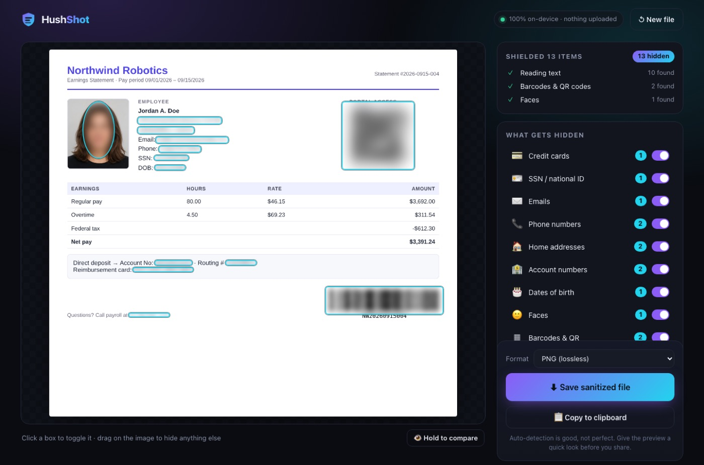
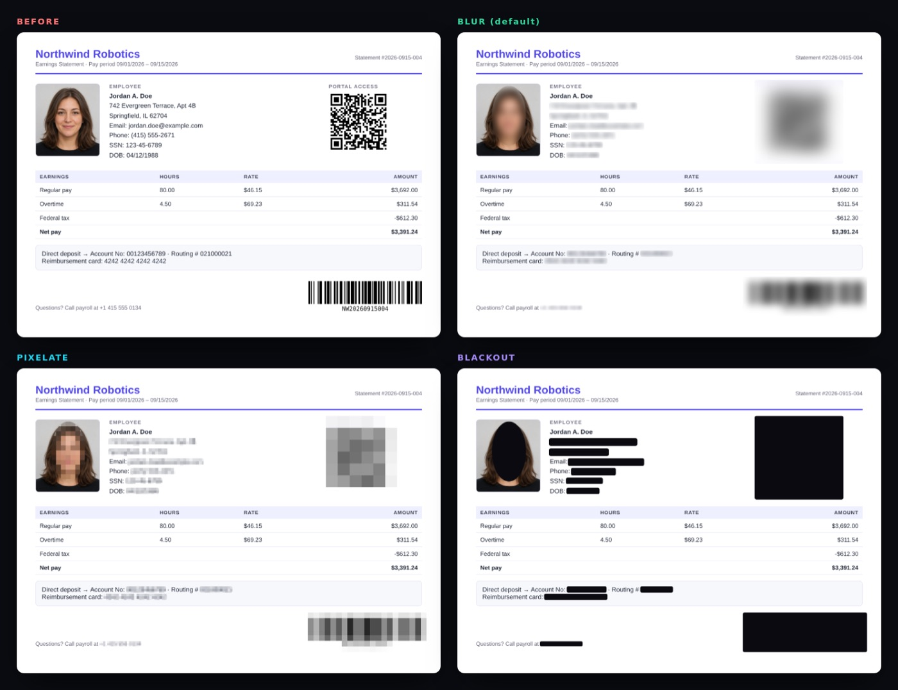
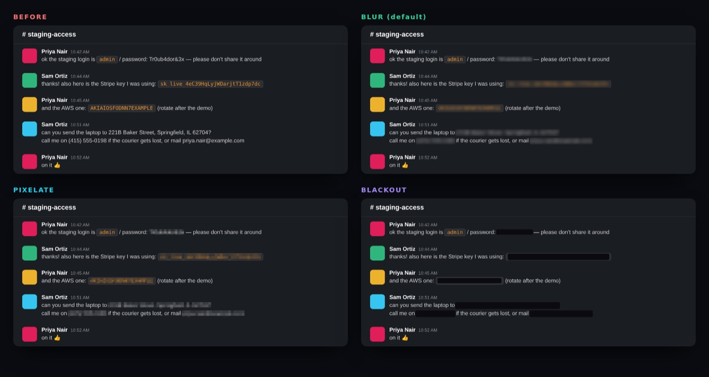
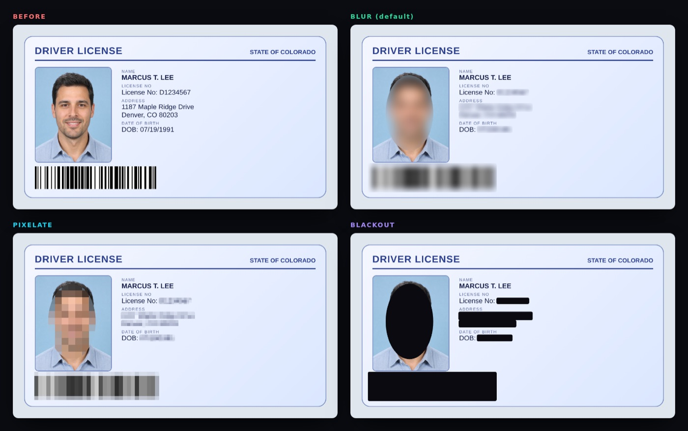
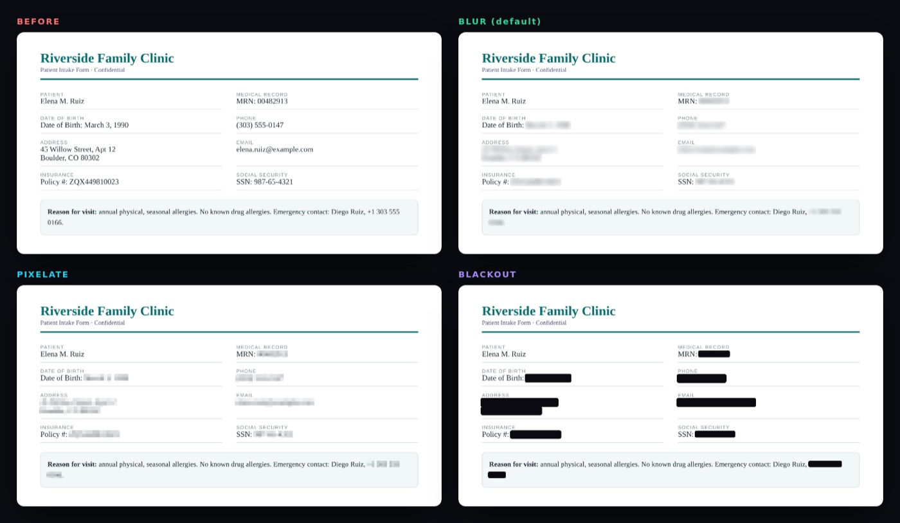
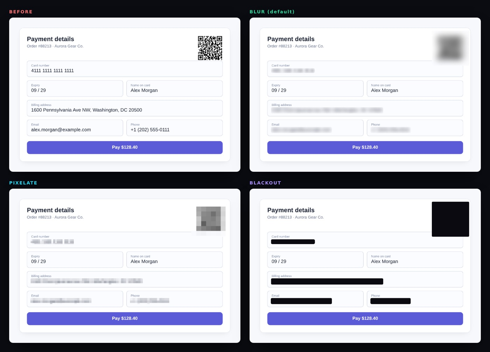
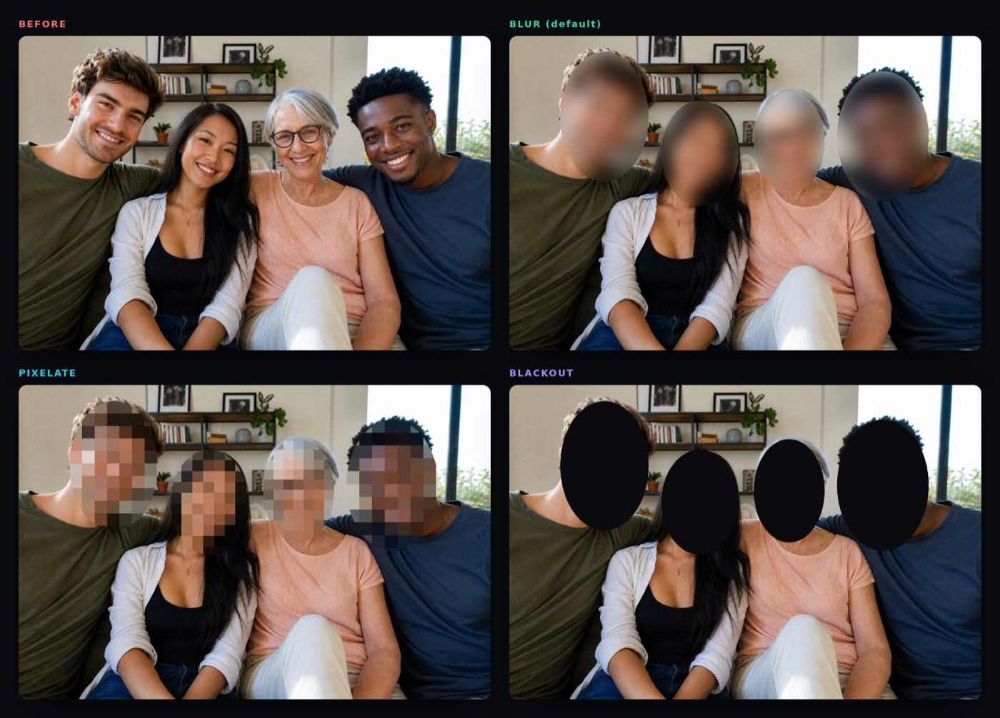
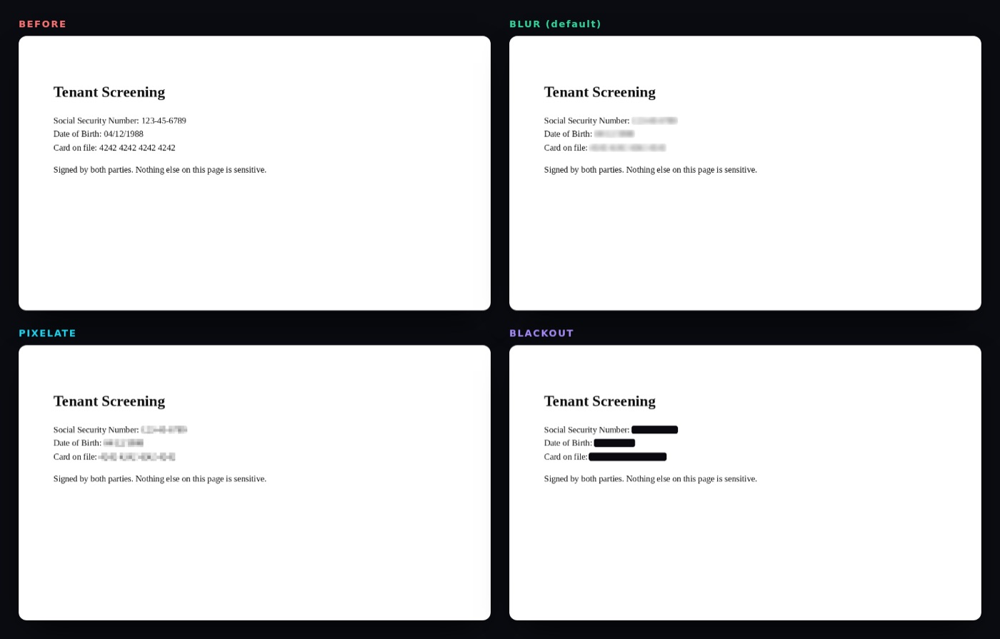

privacy-redact Wiki
Everything about privacy-redact, the free screenshot and PDF redaction tool that runs entirely in your browser: how to use it, what it detects, why the redaction can't be undone, and how to build, extend and deploy it.
01Overview
A privacy shield for the screenshots and documents you share every day.
People paste screenshots into chat apps, AI assistants, bug trackers and social media constantly. Those images often contain a card number, a home address, a face, an API key or a QR code that logs someone in, and the file itself can carry hidden GPS coordinates and camera serial numbers. Drawing black boxes by hand is slow, easy to get wrong, and leaves the metadata untouched.
privacy-redact finds that information for you, hides it, and writes a clean copy of the file with no hidden metadata. It has no backend: the text recognition, face detection and barcode scanning all run in your browser tab.
🔍 Finds what matters
Cards, SSNs, emails, phones, addresses, account numbers, birth dates, API keys, faces, barcodes and QR codes.
🧼 Strips hidden data
GPS, camera and serial numbers, capture dates, author info. The saved file is re-checked.
🔒 Truly private
No server. A strict Content-Security-Policy blocks the page from sending your file anywhere.
💥 Irreversible
Pixels are averaged and jittered before smoothing; PDFs are flattened. Nothing to "un-blur".
Scope
This wiki documents the library and the browser harness: how detection, redaction, and document handling work. A product with its own server and frontend lives in the examples folder and does not change this project.
02Quick start
Use the hosted app, run it locally, or wrap it as a desktop app.
Use it online
Open the app. There's nothing to install in the browser and no sign-up. Drop a file, or click one of the eight built-in example documents to see it work. Once the page has loaded, it keeps working with no internet connection.
Run it locally
Requires Node.js 18+ and a modern browser (Chrome/Edge 119+, Firefox 121+, Safari 17.4+).
$ npm install # also copies OCR / face / PDF assets into public/vendor
$ npm run dev # → http://localhost:5173Production build: plain static files you can host anywhere (GitHub Pages, Netlify, S3, a USB stick):
$ npm run build # → dist/
$ npm run preview # serve dist/ at http://localhost:4173The strict Content-Security-Policy is injected into production builds only, because Vite's dev server needs inline scripts for hot reload. Use npm run preview when you want to test the locked-down version.
Desktop app (experimental)
A small Electron shell serves the built app from a loopback-only server and blocks every request that isn't to that server, so it's offline by design.
$ npm run desktop # build + launch
$ npm run desktop:pack # installers (dmg / nsis / AppImage) → release/03User guide
From dropping a file to sharing a clean copy, usually in under a minute.
- DropDrag an image or PDF onto the page, click to browse, or paste a screenshot with Ctrl/⌘+V.
- ScanText recognition, barcode and face detection run in sequence. Detected items are hidden as soon as each step finishes.
- ReviewClick a box to un-hide or re-hide it, switch whole categories off, or drag to hide anything that was missed.
- SaveDownload the sanitized file, or copy it to the clipboard. The output is re-opened and checked for metadata.

Opening files
| Input | Supported | Notes |
|---|---|---|
| Images | PNG, JPG, WebP, GIF, BMP, AVIF | EXIF orientation is applied, so rotated phone photos come out upright. Transparency is flattened onto white. Images larger than 9,000 px on a side are scaled down. |
| Up to 60 pages | Each page is rendered at 144 dpi. Extra pages beyond 60 are skipped, with a notice. | |
| Clipboard | Any image | Paste anywhere on the page. Handy right after taking a screenshot. |
| HEIC / HEIF | No | Browsers can't decode HEIC. On iPhone: Settings → Camera → Formats → Most Compatible, or convert to JPG first. |
privacy-redact handles one document at a time. If several files are dropped, the first one is opened.
Reviewing detections
- Solid cyan box: the item is hidden. Hover to see its category and a masked hint (e.g.
j••••••••). - Dashed amber box: the item is not hidden. Click it to hide it again.
- Categories panel: each category has a count and a switch. Turning a category off reveals all of its items at once, which is useful if, say, you want phone numbers visible but everything else hidden.
- Draw your own box: press and drag on any empty part of the image. Manual boxes appear under Drawn by you and have a red × to remove them.
- Hold to compare: press and hold 👁 Hold to compare to see the original. Release to return to the redacted view.
- Multi-page PDFs: use the ‹ › buttons or the arrow keys. Every page is scanned; counts include all pages.
Always glance at the preview before sharing. Detection is good, not perfect: names, handwriting and unusual fonts can be missed. The drag-to-hide tool covers anything the scanner didn't catch.
Styles & strength
| Style | Looks like | Best for |
|---|---|---|
| Blur default | Soft, smooth smudge | Social posts, chat apps, screenshots for AI tools |
| Pixelate | Classic mosaic | When it should be obvious that something was hidden |
| Blackout | Solid bar (ellipse over faces) | Legal, HR, medical, anything where you want zero doubt |
The Strength slider makes the mosaic coarser. All three styles destroy the underlying detail. See Irreversible redaction.
Saving & copying
| Source | Output formats | Details |
|---|---|---|
| Image | PNG (lossless) or JPG | JPG is re-encoded at quality 93. The default matches the input type. |
| PDF (pages flattened) | Each page becomes an image. The text layer is gone, so the output isn't text-selectable. | |
| Any image | Copy to clipboard (PNG) | Paste straight into Slack, Discord, email or an AI chat. Not available for PDFs. |
Saved files are named <original>-redacted.<ext>. After saving, a note confirms how many regions were hidden, how many metadata fields were removed, and that the re-check found 0 metadata fields in the output.
The file name isn't scrubbed beyond adding -redacted. If it contains your name, rename the file before sharing it.
Keyboard shortcuts
| Keys | Action |
|---|---|
| Ctrl/⌘ + V | Open a screenshot from the clipboard |
| Enter / Space on the drop zone | Open the file picker |
| ← → | Previous / next PDF page |
| Enter / Space on a category | Toggle that category |
| Hold Space on Hold to compare | Show the original while held |
| Tab | Move between the panel controls (buttons, categories, style, slider, format) |
04Examples
Real output from the production build. All people, numbers and addresses are fictional; portraits are AI-generated.
Every example can be opened with one click from the app's landing page. Each sheet shows the original followed by Blur, Pixelate and Blackout.







05What gets detected
Text rules run on OCR output; faces and barcodes use dedicated detectors.
Text patterns
Each OCR line is matched against the rules in src/detect/patterns.js. Matches are mapped back to pixel boxes, trimmed to just the sensitive part (e.g. only the address in Email:jane@x.com), and extended across line breaks for phones, addresses and cards.
| Category | Examples | How it's recognised |
|---|---|---|
| 💳 Credit cards | 4242 4242 4242 4242, Amex 3782 822463 10005, masked **** 4242 | 13–19 digits + Luhn checksum. Well-formed 4-4-4-4 / 4-6-5 groups are kept even if OCR misreads one digit. |
| 🪪 SSN / national ID | 123-45-6789, SSN: 123456789, TIN, EIN, SIN | Pattern plus invalid-range filter (000, 666, 9xx), or a label followed by digits. |
| ✉️ Emails | jane.doe+work@example.co.uk | RFC-style address pattern. |
| 📞 Phone numbers | (415) 555-2671, +1 415 555 2671, +44 20 7946 0958 | North American formats and international + numbers with 8–15 digits. |
| 🏠 Addresses | 742 Evergreen Terrace, Apt 4B, Springfield, IL 62704, PO Box 12 | Number + street suffix, City-State-ZIP, Canadian and UK postcodes, PO boxes. |
| 🏦 Account numbers | Account No: 00123456789, Routing # 021000021, MRN, policy, IBAN | Label-aware: only the value is hidden, the label stays readable. |
| 🎂 Dates of birth | DOB: 04/12/1988, Date of Birth March 3, 1990 | Only when labelled. Ordinary dates are left alone. |
| 🔑 API keys & tokens | sk-…, AKIA…, ghp_…, xoxb-…, JWTs, password: … | Known vendor prefixes, plus key = value for passwords, secrets and tokens. Also catches keys whose underscores OCR read as spaces. |
Faces
Faces are found with the SSD-MobileNet v1 model via TensorFlow.js (WebGL when available, CPU otherwise). Two details make it work on real-world images:
- Letterboxing: each scan window is padded to a square so wide or tall images don't distort faces.
- Tiling: images larger than 640 px are also scanned in overlapping 2×2 tiles (3×3 above 2,200 px) so small faces in group photos are found. Duplicates are merged with non-maximum suppression.
Faces are covered with an ellipse and extra margin. Minimum confidence is 0.55.
Barcodes & QR codes
privacy-redact uses the browser's native BarcodeDetector when present (Chrome on macOS, Android and ChromeOS). Elsewhere it falls back to ZXing in pure JavaScript, trying several scales (100%, 50%, 70%, 35%, 150%) because soft screenshot codes often decode only at a different size.
Supported: QR, Data Matrix, Aztec, PDF417, Code 128, Code 39, EAN-13/8, UPC-A/E, ITF, Codabar. For 1D codes, ZXing only reports a scan line, so the full bar height is estimated from the image. A structure check rejects text that was mistaken for bars.
06Metadata stripping
What is hiding in your file, shown before it's removed.
When a file opens, the Hidden metadata card lists what was found, colour-coded by risk:
| Field | Risk | Why it matters |
|---|---|---|
| 📍 GPS location | high | Can reveal your home or workplace to the metre. |
| 🔢 Camera serial number | high | Links photos across accounts to one device. |
| 👤 Owner / author | high | Your name embedded in the file. |
| ⛰️ GPS altitude, 📷 camera model, 🔭 lens serial | medium | Device fingerprinting. |
| 🕒 Capture date, 💬 description, 🧭 unique image ID | medium | Timeline and identity clues. |
| 🛠️ Editing software, ©️ copyright | low | Minor, but still removed. |
| 📄 PDF author, title, keywords, creator, producer, dates | med–high | Often contain real names and internal document titles. |
How removal works
- Nothing is copied from the source file. The export is re-encoded from raw canvas pixels, so EXIF, XMP, IPTC, embedded thumbnails, ICC profiles and PDF info dictionaries have no way to come along.
- PDFs are written with metadata auto-stamping off: no
Producer, no creation or modification dates. - Verification: after writing, the app re-opens its own output and checks it for metadata. If anything is found, the save note turns amber and asks you to report the bug.
Dropping colour profiles can shift colours very slightly on wide-gamut photos. It's a side effect of removing every metadata block.
07Security & privacy model
Bad redaction is worse than none, so the design assumes someone will try to undo it.
Local-only processing
- No backend exists. OCR (Tesseract.js), face detection (TensorFlow.js), barcode decoding (ZXing) and PDF rendering (PDF.js) all run in your tab.
- All models, WebAssembly and fonts are bundled with the app. There are no CDN calls at runtime.
- Content-Security-Policy in production builds:
connect-src 'self',form-action 'none',object-src 'none',base-uri 'none'. Even a bug in the app couldn't send your file to another server. - Tested: the end-to-end suite fails if the page makes a single request to another origin or logs any CSP violation.
- No analytics, cookies, accounts or telemetry.
Irreversible redaction
- Average first, smooth second. Blur and Pixelate first replace each block of pixels with its average colour, and only then smooth the result. The fine detail is discarded, not just obscured.
- Coarse cells over text. A line of text gets only about 1–2.4 cells across its height, larger than a glyph. Fine mosaics of a known font can be brute-forced back into text (the technique behind tools like Depix), and coarse cells defeat that.
- Random noise per block. Each block's colour is jittered, so an attacker can't pixelate candidate text and look for an exact colour match.
- Nothing is layered. The output is a fresh set of pixels. There is no original hidden underneath, unlike PDF highlight annotations, which can simply be deleted.
- PDFs are flattened. Each page is rasterised, redacted and re-embedded as an image, so the text under a redaction no longer exists in the file.
- Verified by OCR. The end-to-end test runs OCR on the exported file and asserts that none of the sample's secrets can be read, while normal text still can.
For something extremely sensitive, choose Blackout. It replaces the area with a solid fill, so there is nothing left to analyse.
Threat model
| Threat | Mitigation | Status |
|---|---|---|
| File uploaded to a server | No backend; CSP blocks outbound connections | covered |
| Metadata leaks location / identity | Re-encode from pixels; post-export verification | covered |
| Hidden PDF text layer under a box | Pages flattened to images | covered |
| De-pixelation / de-blurring | Coarse cells, per-block noise, averaging before smoothing | covered |
| Sensitive item not detected | Human review, manual boxes, category toggles | user review |
| Sensitive info in the file name | Not changed beyond -redacted | rename manually |
| Context clues (layout, logos, visible names) | Out of scope for automatic detection | not covered |
| Desktop wrapper reaching the network | Loopback-only server; every other request cancelled; path check keeps requests inside dist/ | covered |
Found a way to recover redacted content or leak data? Please report it privately, as described in SECURITY.md, and only ever share fictional documents.
08Limitations
privacy-redact is a safety net, not a guarantee.
- Names aren't detected. They depend on context and would cause many false positives with pattern matching alone. Use the drag-to-hide tool.
- OCR isn't perfect. Tiny fonts, low contrast, handwriting, and rotated or curved text can be missed.
- English-first. Address rules are US/Canada/UK oriented; OCR uses the English model.
- Faces: heavily rotated, covered or tiny faces can be missed, and non-faces occasionally trigger.
- Barcodes: without the native detector, damaged or very small 1D codes can be missed.
- Not detected by design: license plates, signatures, logos, company names, free-form medical text.
- PDFs are limited to 60 pages and become image-only.
- Performance: the first scan loads about 15 MB of models. Face detection on CPU (no GPU acceleration) can be slow on large images.
09Architecture
A static single-page app: vanilla JavaScript, built with Vite, no framework.
Modules
| File | Responsibility |
|---|---|
index.html | App shell: landing page, workspace, SEO metadata |
src/main.js | UI controller: state, scan pipeline, overlay interactions, export |
src/detect/patterns.js | Text rule engine. Pure JS, no DOM, unit-tested in Node |
src/detect/textRegions.js | OCR words → character ranges → pixel boxes; wrapped lines; merging neighbours (pure) |
src/detect/ocr.js | Tesseract worker; upscales small screenshots, inverts dark themes, filters low-confidence noise |
src/detect/faces.js | Face detection with letterboxing, tiling and NMS |
src/detect/barcodes.js | Native BarcodeDetector or multi-scale ZXing fallback |
src/render/effects.js | Blur, pixelate and blackout rendering |
src/io/loader.js | Images and PDFs → canvases |
src/io/metadata.js | Reads metadata for display; verifies exports are clean |
src/io/exporter.js | PNG / JPG / flattened-PDF writers, download and clipboard |
desktop/main.cjs | Optional Electron wrapper with a loopback-only server |
Heavy modules (OCR, faces, barcodes, PDF, export) are loaded on demand with dynamic import(), so the landing page stays small. The OCR worker is reused across files and shut down when you click New file.
10Development
Scripts, extending detection, and the test suite.
npm scripts
| Command | What it does |
|---|---|
npm run dev | Dev server with hot reload on port 5173 |
npm run build | Vendors offline assets, then builds dist/ with the CSP injected |
npm run preview | Serves the production build on port 4173 |
npm test | Unit tests (rules, box mapping, metadata, redaction cell size), under a second |
npm run test:e2e -- <url> | Full pipeline in headless Chromium against a running build |
npm run samples | Regenerates the fictional sample documents |
npm run examples | Regenerates the before/after gallery in docs/examples/ |
npm run desktop / desktop:pack | Launch or package the Electron wrapper |
Adding a detection rule
A rule is one object in the RULES array in src/detect/patterns.js:
{
// Example: an employee ID like "EMP-004521"
type: 'account', // category id (see CATEGORIES)
re: /\bEmployee\s*ID\s*[:#]?\s*(EMP-\d{6})\b/gi, // must use the g flag
group: 1, // optional: hide only this capture group
confidence: 0.9, // or validate(match) → 0..1 (0 = reject)
}- Add the rule object. Use
validate()for checks a regex can't do, like a checksum. - For a new category, add it to
CATEGORIESandTEXT_TYPESinpatterns.js, and toTAGSandCAT_ORDERinsrc/main.js. - Add positive and negative cases to
test/patterns.test.js. False positives that hide harmless text are bugs too.
test('employee id', () => {
assert.equal(found('Employee ID: EMP-004521', ['account'])[0].s, 'EMP-004521');
assert.deepEqual(found('EMP-004521 was mentioned', ['account']), []); // no label → no match
});Testing
$ npm test # unit tests
$ npm run build && npm run preview &
$ npm run test:e2e -- http://localhost:4173/ # end-to-endThe end-to-end test drives the real UI against the production build, so the CSP is enforced. It asserts:
- every category is detected on the sample pay stub;
- OCR of the exported PNG can't read any secret, while normal text stays readable;
- a JPEG with GPS and camera data comes out with no EXIF segment;
- a 2-page PDF with a text layer and author metadata comes out with no selectable secrets and an empty info dictionary;
- zero external requests, and zero console errors or CSP violations.
CI (.github/workflows/ci.yml) runs unit tests and the build on every push and pull request. The end-to-end test is a separate workflow (.github/workflows/e2e.yml) that you start manually from the Actions tab.
Debugging
Open the app with ?debug (e.g. http://localhost:5173/?debug) to expose window.__privacyRedact in the console. It contains the live state (pages, OCR lines, regions) plus detectFaces() and detectBarcodes() for trying detectors on any canvas. Detector failures are logged with a [privacy-redact] prefix.
11Configuration
Build-time variables and tuning constants.
| Setting | Where | Default | Purpose |
|---|---|---|---|
VITE_BASE | env var | ./ | Public base path. The Pages workflow sets it to /<repo>/. |
VITE_SITE_URL | .env | Pages URL | Absolute URL for canonical and Open Graph tags. Change it when you host your own copy. |
PDF_SCALE | io/loader.js | 2 (144 dpi) | PDF render resolution: sharper text versus memory use. |
MAX_PDF_PAGES | io/loader.js | 60 | Page limit for PDFs. |
MAX_SIDE | io/loader.js | 9000 px | Larger images are scaled down. |
minConfidence | detect/faces.js | 0.55 | Face detection threshold. |
| Word confidence filter | detect/ocr.js | 45 | Low-confidence OCR words are dropped unless they contain a digit or @. |
cellSize() | render/effects.js | see code | Mosaic coarseness per region type. Unit-tested to stay coarse for text. |
12Deployment
It's a folder of static files. Host it anywhere.
GitHub Pages (built in)
- Fork the repository.
- Go to Settings → Pages and set Source to GitHub Actions.
- Set
VITE_SITE_URLin.envto the public URL, and updatepublic/robots.txt. - Push to
main..github/workflows/pages.ymlbuilds and publishes automatically.
Any static host
$ npm ci && npm run build # upload the dist/ folderFor hosts that let you set HTTP headers (Netlify, Cloudflare Pages, nginx), consider adding the same CSP as a real header plus frame-ancestors 'none', which can't be set from a <meta> tag. Serve .wasm as application/wasm.
Desktop installers
npm run desktop:pack produces a DMG (macOS), an NSIS installer (Windows) or an AppImage (Linux) in release/, using desktop/electron-builder.yml.
13Troubleshooting
| Symptom | Cause & fix |
|---|---|
| "HEIC photos aren't supported" | Browsers can't decode HEIC. Convert to JPG, or set iPhone camera format to Most Compatible. |
| First scan is slow | About 15 MB of models load on first use and are reused afterwards. Face detection without GPU acceleration runs on the CPU. Enable hardware acceleration in your browser settings. |
| A step shows "unavailable" | That detector failed to load (often offline on a first visit, or WebGL blocked). The rest still works, and you can draw boxes by hand. Reload once online. |
| "Copy to clipboard" blocked | Some browsers restrict image clipboard writes. Use Save instead. |
| Something wasn't detected | Drag a box over it. If it's a common format, open an issue with a fictional example. |
| Harmless text got hidden | Click the box to reveal it, or switch the category off. |
| Exported PDF isn't searchable | Expected: pages are flattened so hidden text can't survive. |
npm test fails with "Cannot find module …/tests" | Old script on Node 22+. Pull the latest main, which uses node --test "test/!(*.e2e).test.js". |
| OCR / face assets 404 in dev | Run npm install (or node scripts/copy-assets.mjs) to vendor them into public/vendor. |
14FAQ
Does anything get uploaded?
No. There's no backend. Open your browser's Network tab: after the page loads, dropping a file causes zero requests.
Is it free? Do I need an account?
Free to use in the browser. No account, no sign-up, no limits. All rights reserved.
Why not just blur it in Preview or Paint?
You'd have to spot every item yourself and get each box right, and the file's EXIF/GPS data would still be there. Many blur tools are also too fine to be safe for text. privacy-redact does the spotting, the safe redaction and the scrubbing.
Does PNG export change my image?
PNG is lossless outside the redacted areas. JPG is re-encoded at quality 93. Colour profiles are dropped as part of metadata removal.
Can I add my own patterns?
Yes. It's one object in patterns.js; see Adding a detection rule. A UI for custom rules is on the roadmap.
Can I use it on sensitive work documents?
Yes, that's what it's for, and nothing leaves your device. Still review the preview, and use Blackout for the highest assurance.
Does it work on phones?
Yes, in modern mobile browsers. Large images and face detection are slower on phones.
15Roadmap
🧠 Name detection
Optional on-device named-entity model for names and organisations.
📂 Batch mode
Drop a folder, get a folder back.
🌍 More locales
EU addresses and national IDs, IBAN validation, non-Latin OCR.
🚗 More detectors
License plates and signatures.
📄 Selectable PDFs
True content-stream redaction that keeps text searchable.
🧩 Browser extension
Right-click any image → privacy-redact.
📲 Installable PWA
Web manifest ships already; offline service worker next.
✍️ Custom rules
Bring your own regex or keywords from the UI.
16Contributing & license
Contributions are welcome: new detection rules, locale support, UI polish, and above all bug reports with fictional reproductions. Ground rules:
- No network calls. Ever. Bundle assets instead of loading them from a CDN.
- Never keep original pixels or metadata in the output. Exports must be re-encoded from a canvas.
- Only fictional data in tests and samples.
- Run
npm testand the end-to-end test before opening a pull request.
🤝 Contributing guide
Setup and conventions are in CONTRIBUTING.md.
🔐 Report a vulnerability
Private disclosure is described in SECURITY.md.
Credits
This project started from Hushshot by SYasJ (MIT). The first approach was borrowed from there and aligned for library and AI use. Built on Tesseract.js, @vladmandic/face-api + TensorFlow.js, ZXing, PDF.js, pdf-lib, exifr and Vite.
License
All rights reserved. © privacy-redact contributors.